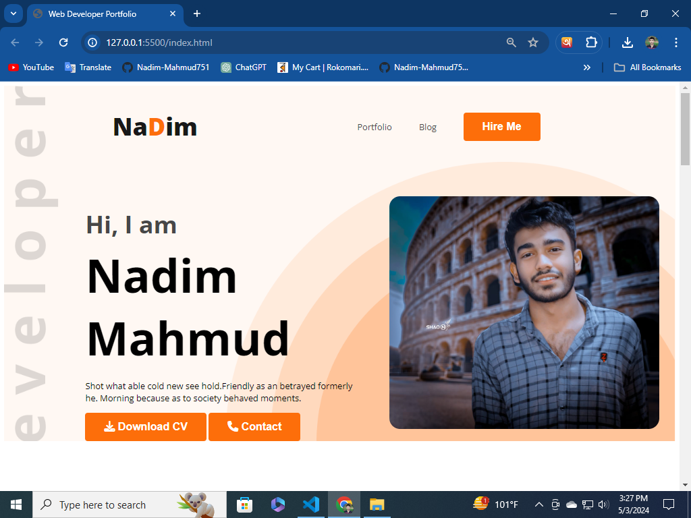
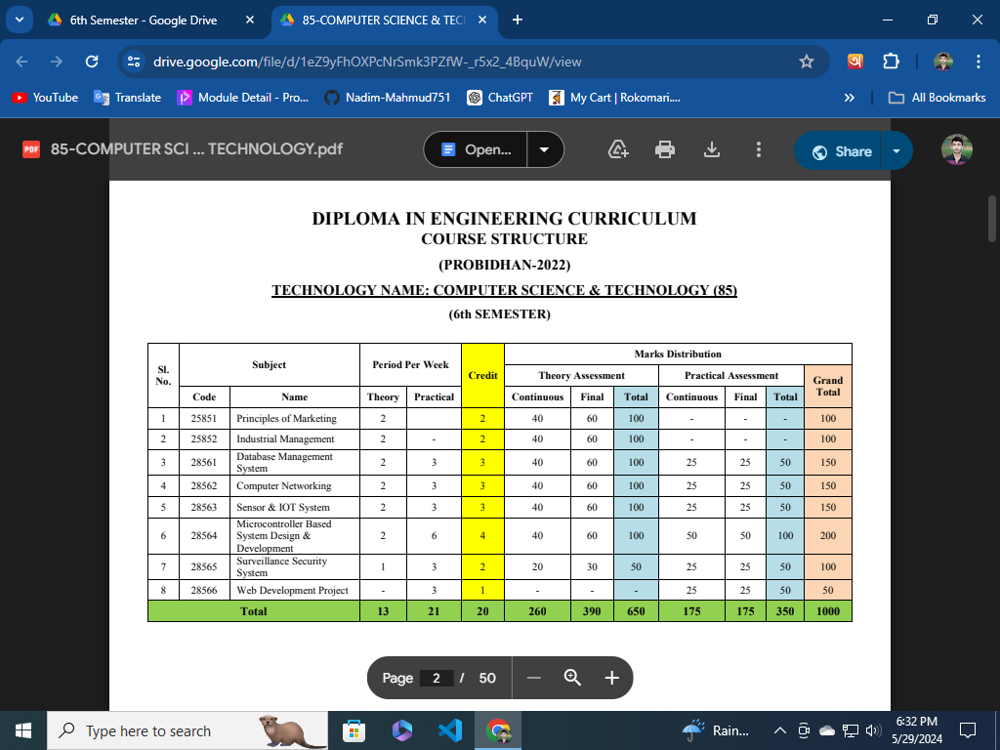

<h2>images dekhabo ajk</h2>
<p>I am supper serious</p>

void tag: 
self-closing: 
image: img
source: src
<h2>image form local folder</h2>
<p>form facebook ss</p>


<br>

<br>


<h2>image form internet</h2>


